Fluid nerve atlas: 11 atom-based, 32 backbone-based, 31 paired systems
Descriptive constructions; see the theory PDF, comparison overview and the README. Blue = atom-based, orange = backbone-based, aqua = paired heavy-atom representation.
Alanine dipeptide (mdshare) ala2
atom group · heavy atoms (10 sites) · 750,000 frames / 3 runs · nerve 78/212/138 · β [3, 3, 0] · median h 0.038320369260221476 nm · τ_connect 1 frames
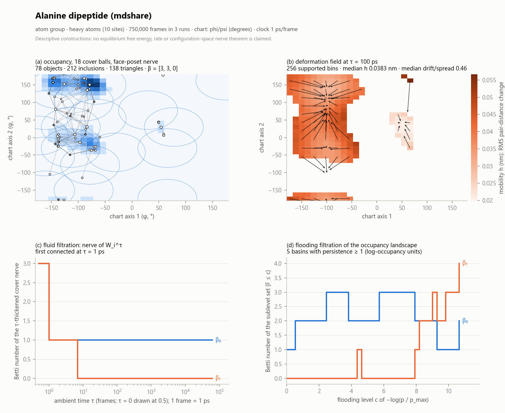
summary · nerve · base.hom · poset.hom · click script
azobenzene (MD17 ab initio MD) sgdml-md17-azobenzene
atom group · heavy atoms (14 sites) · 99,999 frames / 1 runs · nerve 63/146/84 · β [1, 1, 0] · median h 0.014906736614273818 nm · τ_connect 0 frames
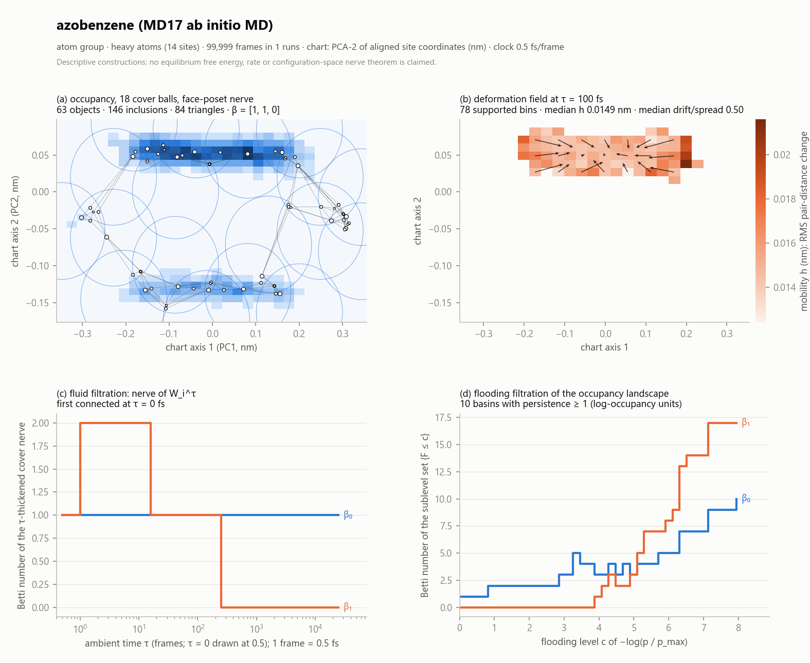
summary · nerve · base.hom · poset.hom · click script
ethanol (MD17 ab initio MD) sgdml-md17-ethanol
atom group · heavy atoms (3 sites) · 555,092 frames / 1 runs · nerve 24/12/0 · β [12, 0, 0] · median h 0.008242320635725307 nm · τ_connect 3 frames
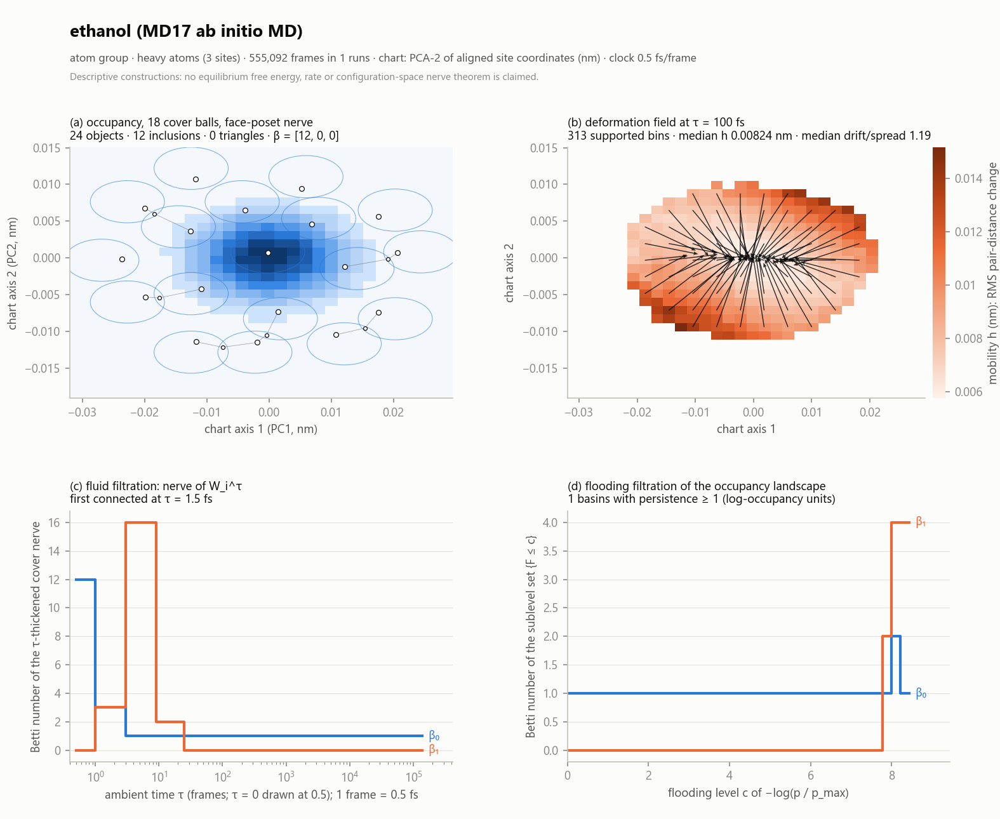
summary · nerve · base.hom · poset.hom · click script
malonaldehyde (MD17 ab initio MD) sgdml-md17-malonaldehyde
atom group · heavy atoms (5 sites) · 993,237 frames / 1 runs · nerve 79/210/132 · β [1, 0, 0] · median h 0.01894652298030962 nm · τ_connect 0 frames
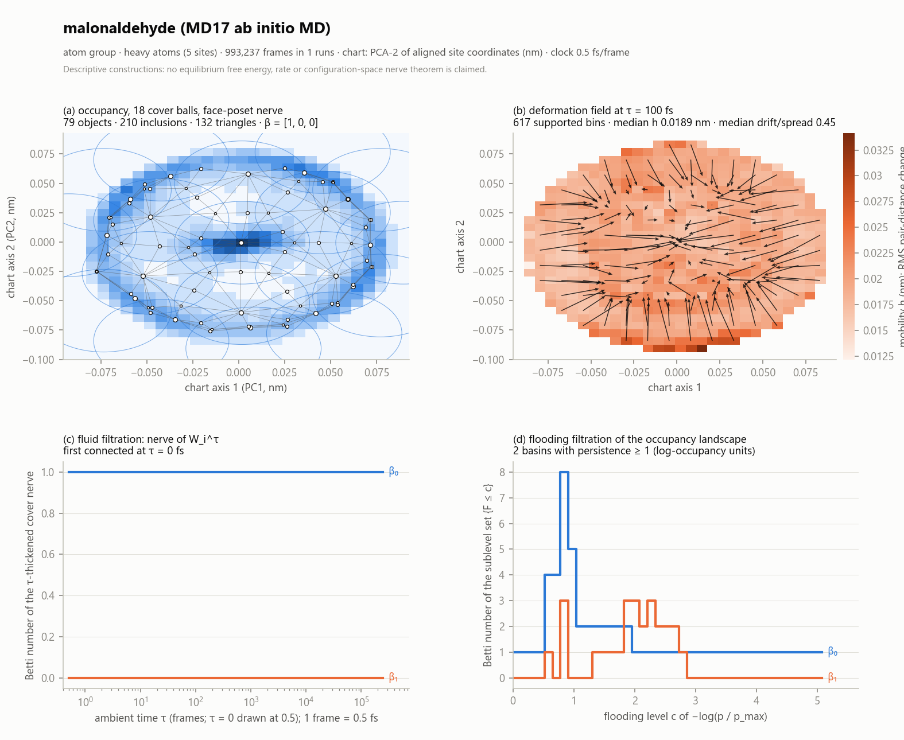
summary · nerve · base.hom · poset.hom · click script
naphthalene (MD17 ab initio MD) sgdml-md17-naphthalene
atom group · heavy atoms (10 sites) · 326,250 frames / 1 runs · nerve 41/58/18 · β [2, 1, 0] · median h 0.00820800265323621 nm · τ_connect 1 frames
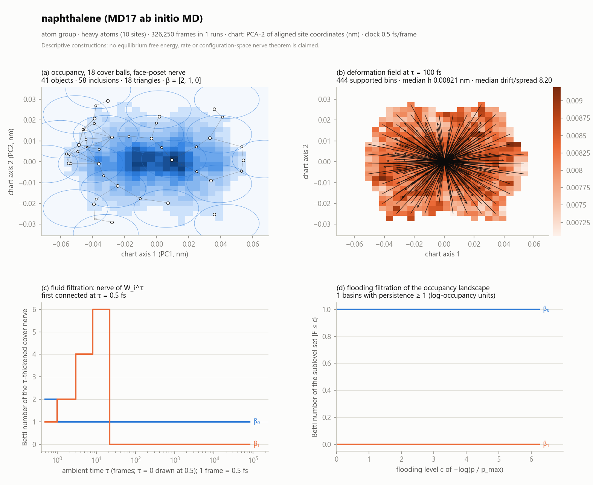
summary · nerve · base.hom · poset.hom · click script
paracetamol (MD17 ab initio MD) sgdml-md17-paracetamol
atom group · heavy atoms (11 sites) · 106,490 frames / 1 runs · nerve 72/188/120 · β [1, 1, 0] · median h 0.01476970849434146 nm · τ_connect 0 frames
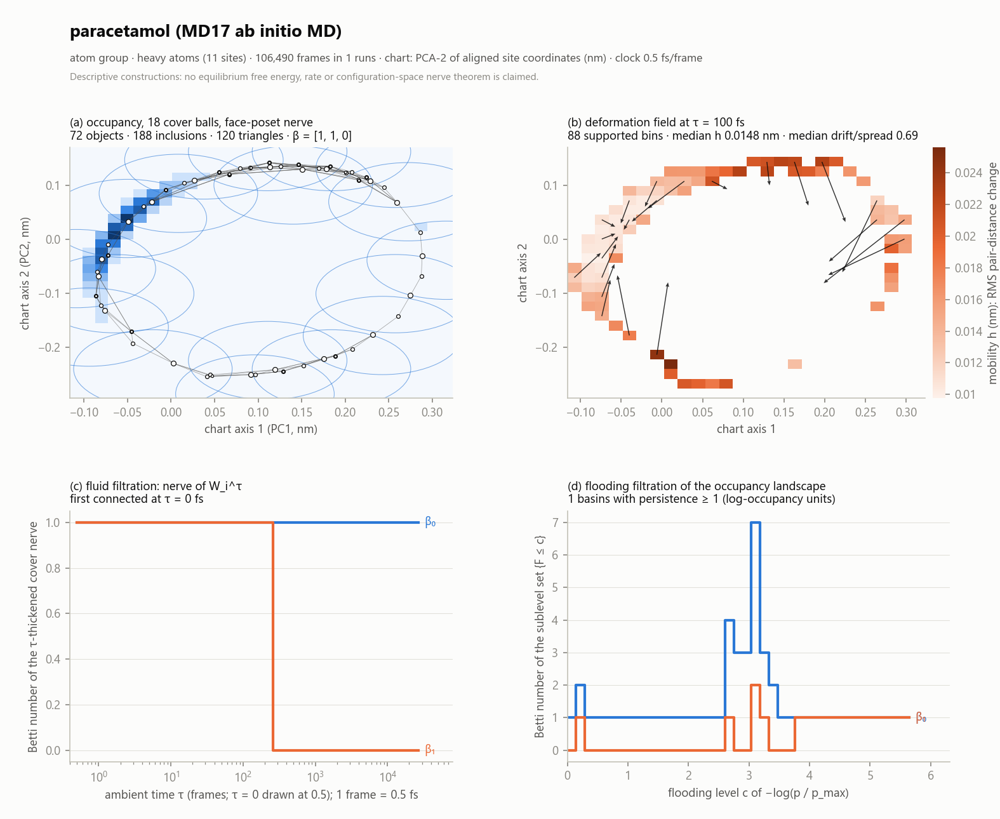
summary · nerve · base.hom · poset.hom · click script
salicylic (MD17 ab initio MD) sgdml-md17-salicylic
atom group · heavy atoms (10 sites) · 320,231 frames / 1 runs · nerve 25/14/0 · β [11, 0, 0] · median h 0.009702885393393434 nm · τ_connect 22 frames
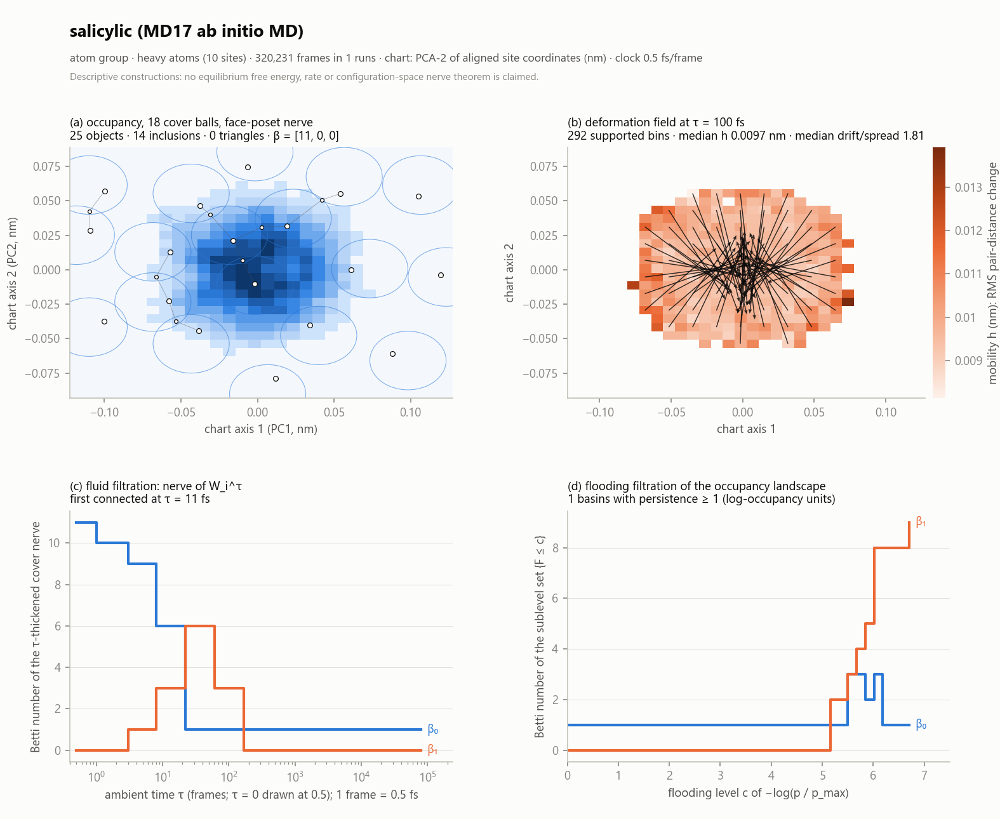
summary · nerve · base.hom · poset.hom · click script
toluene (MD17 ab initio MD) sgdml-md17-toluene
atom group · heavy atoms (7 sites) · 442,790 frames / 1 runs · nerve 28/20/0 · β [8, 0, 0] · median h 0.007648776263341375 nm · τ_connect 3 frames
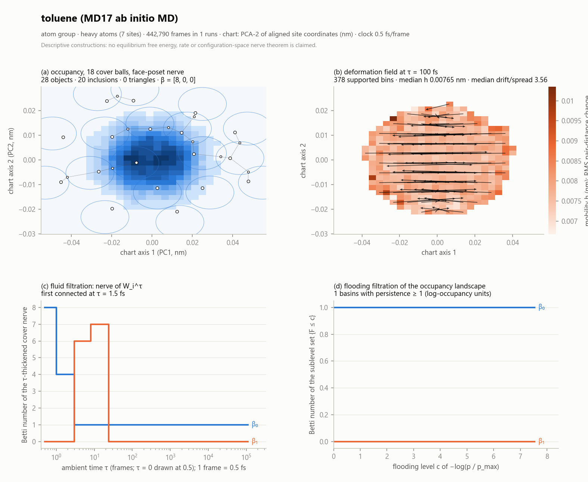
summary · nerve · base.hom · poset.hom · click script
uracil (MD17 ab initio MD) sgdml-md17-uracil
atom group · heavy atoms (8 sites) · 133,770 frames / 1 runs · nerve 31/34/12 · β [9, 0, 0] · median h 0.008519050525163935 nm · τ_connect 17 frames
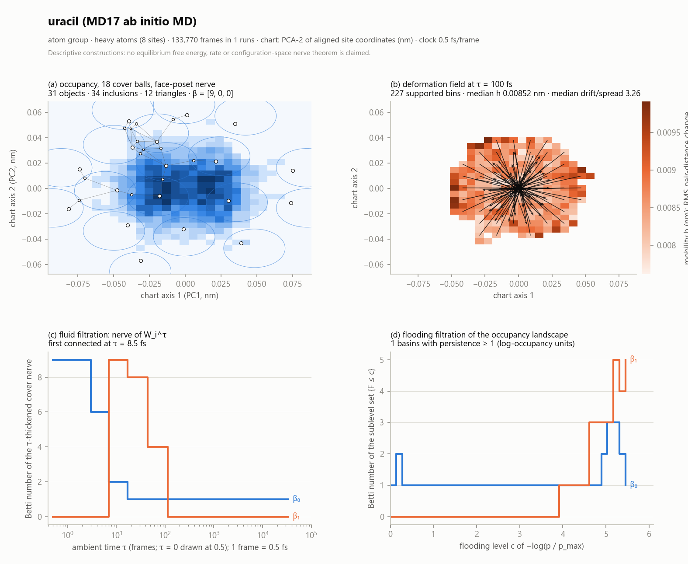
summary · nerve · base.hom · poset.hom · click script
Ac-Ala3-NHMe (MD22 ab initio MD) sgdml-md22-ac-ala3-nhme
atom group · heavy atoms (20 sites) · 85,109 frames / 1 runs · nerve 64/140/72 · β [1, 6, 0] · median h 0.027607601391916446 nm · τ_connect 0 frames
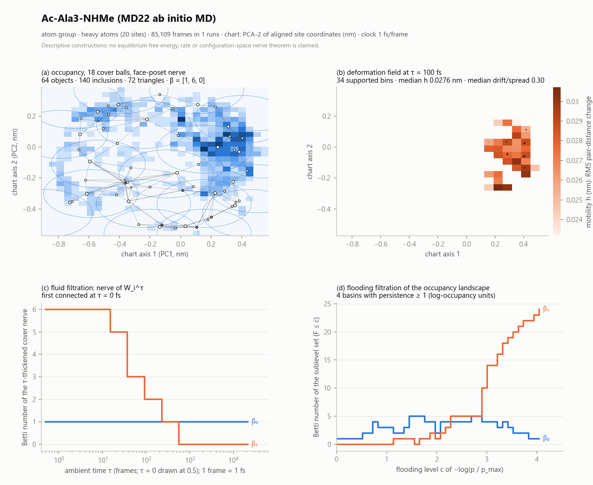
summary · nerve · base.hom · poset.hom · click script
AT-AT (MD22 ab initio MD) sgdml-md22-at-at
atom group · heavy atoms (38 sites) · 20,001 frames / 1 runs · nerve 118/412/318 · β [1, 0, 0] · median h None nm · τ_connect 0 frames
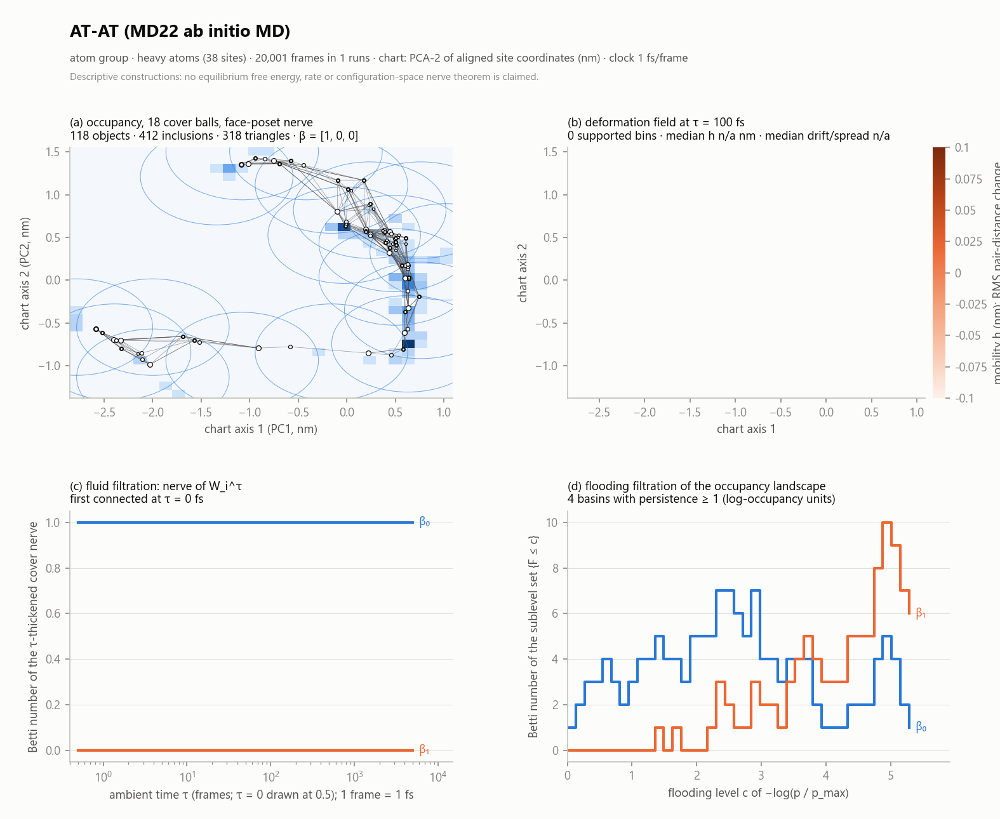
summary · nerve · base.hom · poset.hom · click script
Chignolin CLN025 (128-run subset) cln025
backbone group · C-alpha (10 sites) · 63,999 frames / 128 runs · nerve 84/228/144 · β [1, 2, 0] · median h 0.19684377963593389 nm · τ_connect 0 frames
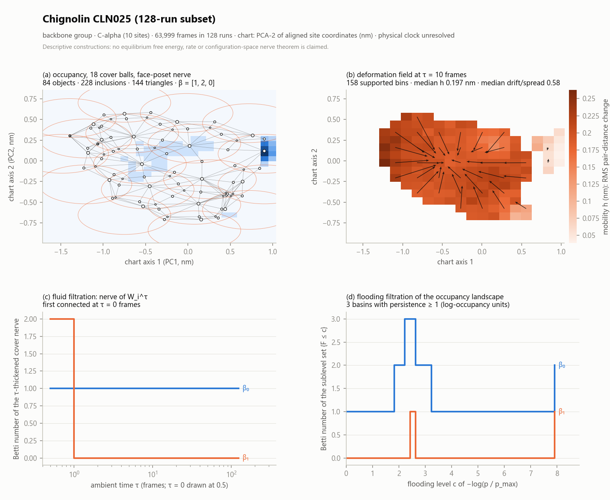
summary · nerve · base.hom · poset.hom · click script
CATH domain 1a92A00 (mdCATH), C-alpha mdcath-1a92a00-ca
backbone group · C-alpha (50 sites) · 10,980 frames / 25 runs · nerve 89/254/168 · β [1, 0, 0] · median h 0.6968844571733862 nm · τ_connect 0 frames
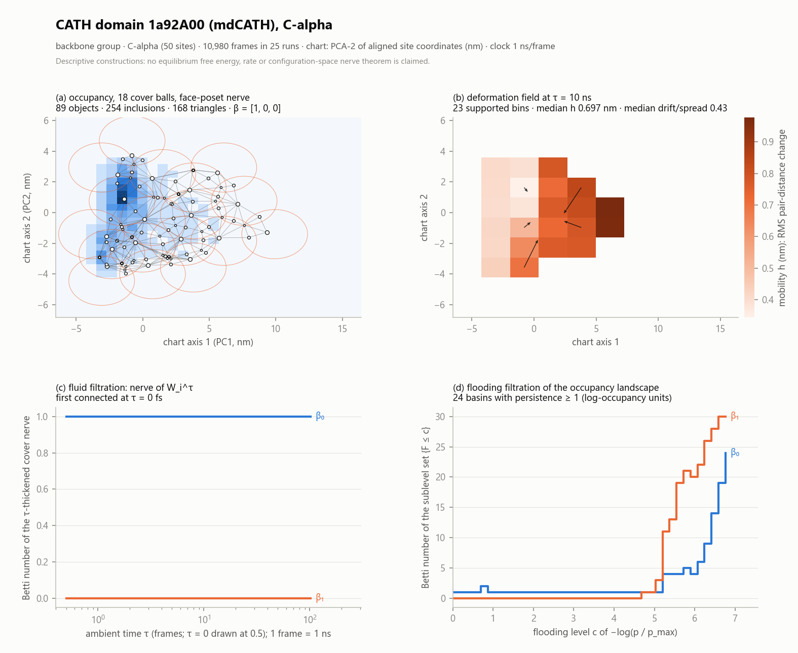
summary · nerve · base.hom · poset.hom · click script
CATH domain 1b33N01 (mdCATH), C-alpha mdcath-1b33n01-ca
backbone group · C-alpha (55 sites) · 11,090 frames / 25 runs · nerve 80/216/138 · β [2, 3, 0] · median h 0.31592321136782997 nm · τ_connect 1 frames
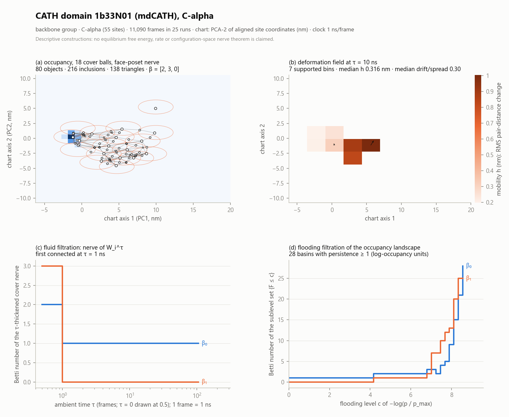
summary · nerve · base.hom · poset.hom · click script
CATH domain 1bdhA01 (mdCATH), C-alpha mdcath-1bdha01-ca
backbone group · C-alpha (57 sites) · 11,110 frames / 25 runs · nerve 76/196/120 · β [1, 1, 0] · median h 0.6351715371144556 nm · τ_connect 0 frames
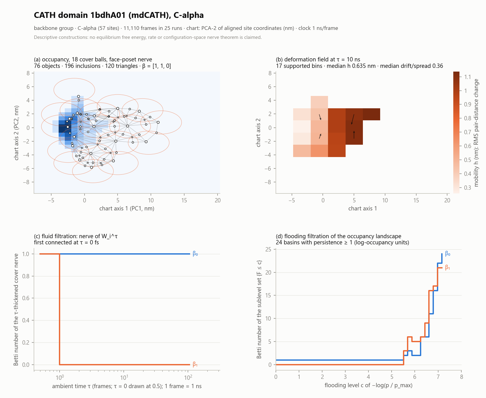
summary · nerve · base.hom · poset.hom · click script
CATH domain 1e5wA04 (mdCATH), C-alpha mdcath-1e5wa04-ca
backbone group · C-alpha (55 sites) · 10,910 frames / 25 runs · nerve 96/288/198 · β [1, 1, 0] · median h 0.8479997331510603 nm · τ_connect 0 frames
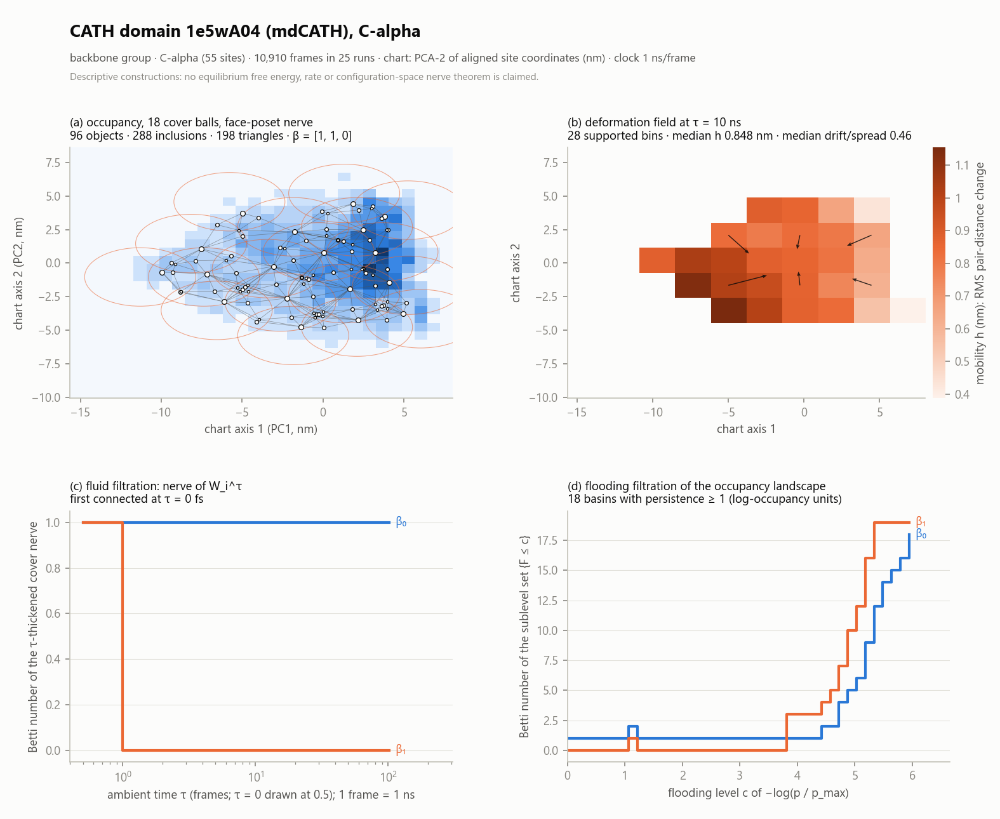
summary · nerve · base.hom · poset.hom · click script
CATH domain 1ffsB00 (mdCATH), C-alpha mdcath-1ffsb00-ca
backbone group · C-alpha (68 sites) · 11,141 frames / 25 runs · nerve 139/510/402 · β [2, 0, 0] · median h 0.4191873399861063 nm · τ_connect 1 frames
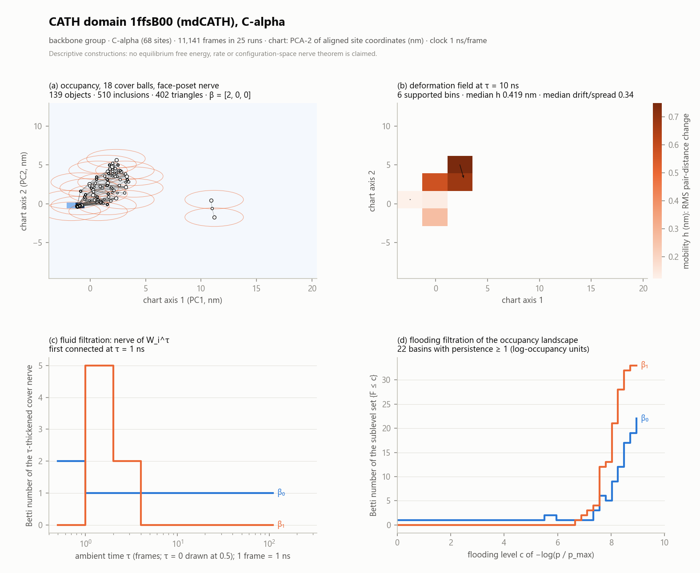
summary · nerve · base.hom · poset.hom · click script
CATH domain 1gjsA00 (mdCATH), C-alpha mdcath-1gjsa00-ca
backbone group · C-alpha (65 sites) · 10,970 frames / 25 runs · nerve 86/244/162 · β [1, 1, 0] · median h 0.6037981123865946 nm · τ_connect 0 frames
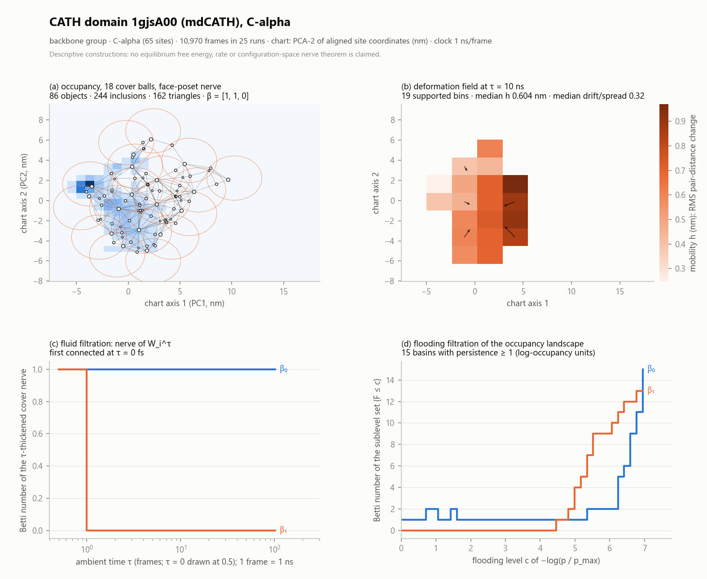
summary · nerve · base.hom · poset.hom · click script
CATH domain 1ha8A00 (mdCATH), C-alpha mdcath-1ha8a00-ca
backbone group · C-alpha (51 sites) · 11,150 frames / 25 runs · nerve 78/208/132 · β [1, 1, 0] · median h 0.2100094440164136 nm · τ_connect 0 frames
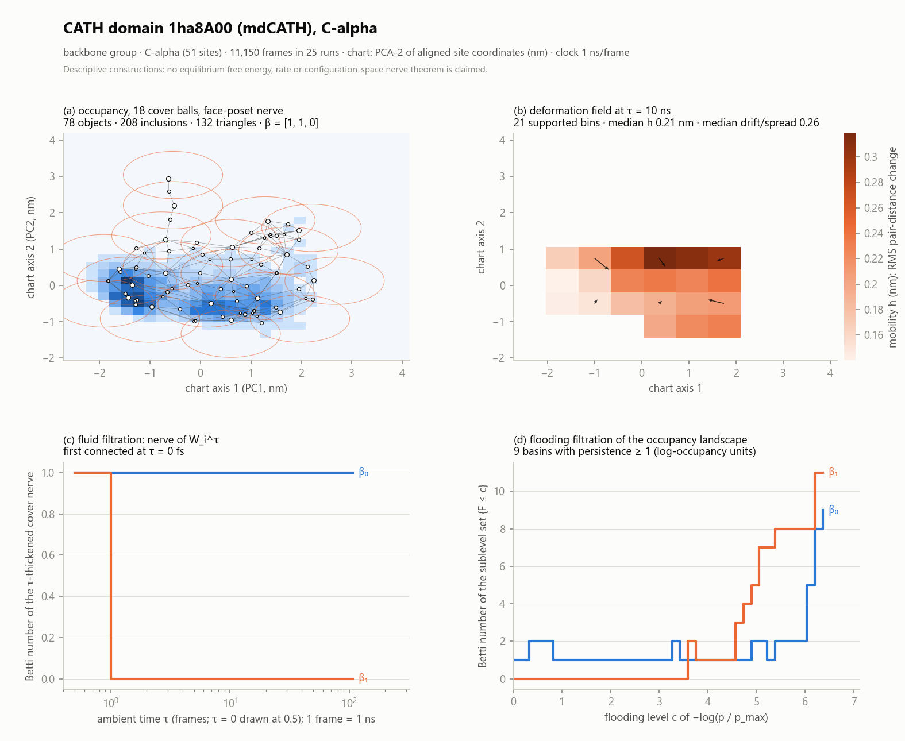
summary · nerve · base.hom · poset.hom · click script
CATH domain 1hcrA00 (mdCATH), C-alpha mdcath-1hcra00-ca
backbone group · C-alpha (52 sites) · 11,160 frames / 25 runs · nerve 65/146/78 · β [1, 4, 0] · median h 0.6907658320864595 nm · τ_connect 0 frames
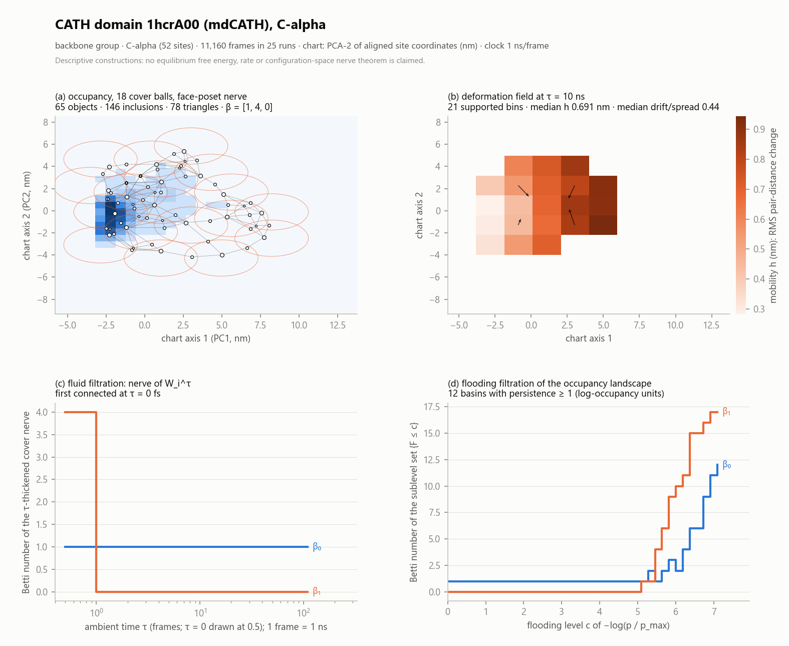
summary · nerve · base.hom · poset.hom · click script
CATH domain 1i5xA00 (mdCATH), C-alpha mdcath-1i5xa00-ca
backbone group · C-alpha (61 sites) · 11,080 frames / 25 runs · nerve 106/336/240 · β [1, 0, 0] · median h 0.606314365648561 nm · τ_connect 0 frames
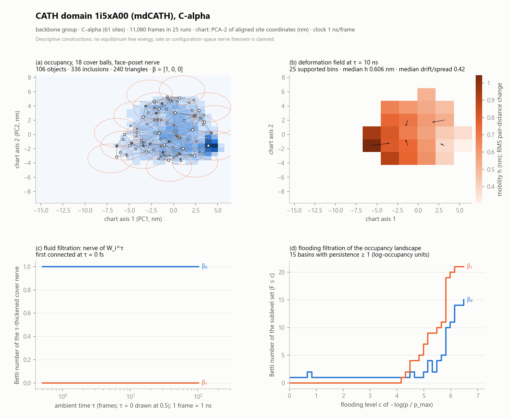
summary · nerve · base.hom · poset.hom · click script
CATH domain 1kliL00 (mdCATH), C-alpha mdcath-1klil00-ca
backbone group · C-alpha (61 sites) · 11,100 frames / 25 runs · nerve 80/216/138 · β [1, 1, 0] · median h 0.5521865670575576 nm · τ_connect 0 frames
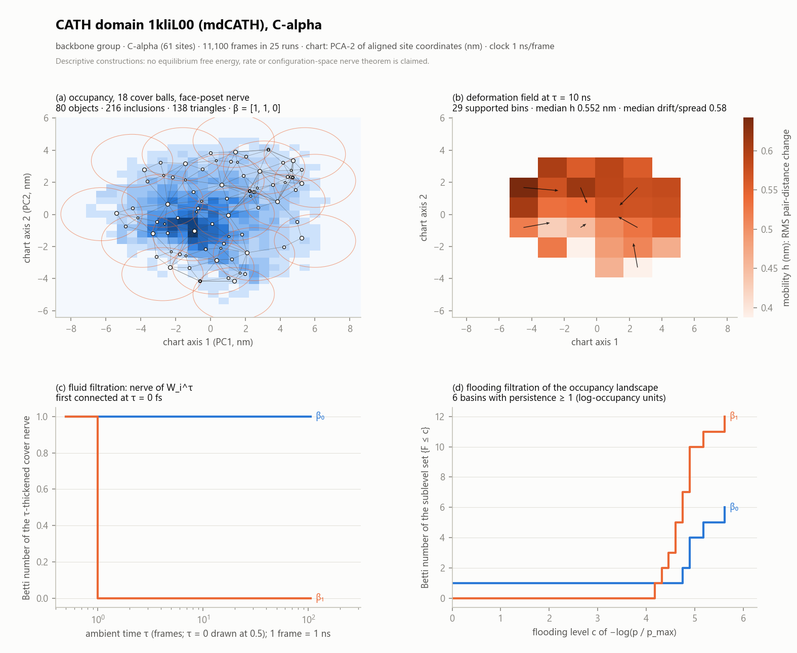
summary · nerve · base.hom · poset.hom · click script
CATH domain 1l6hA00 (mdCATH), C-alpha mdcath-1l6ha00-ca
backbone group · C-alpha (69 sites) · 11,090 frames / 25 runs · nerve 77/198/120 · β [1, 2, 0] · median h 0.34418373945849895 nm · τ_connect 0 frames
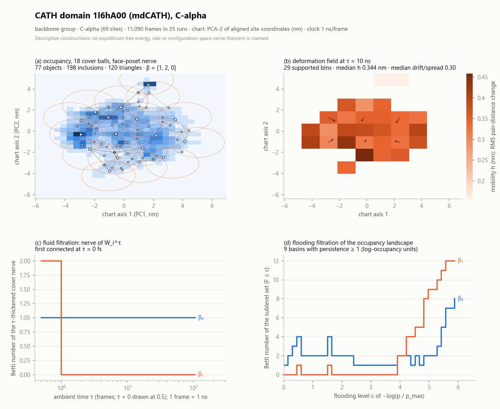
summary · nerve · base.hom · poset.hom · click script
CATH domain 1r8oB01 (mdCATH), C-alpha mdcath-1r8ob01-ca
backbone group · C-alpha (66 sites) · 11,100 frames / 25 runs · nerve 87/246/162 · β [1, 1, 0] · median h 0.9075774025427152 nm · τ_connect 0 frames
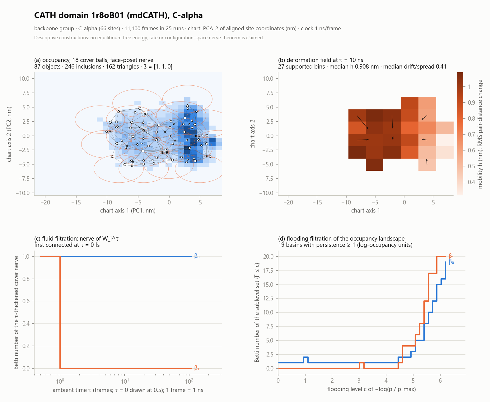
summary · nerve · base.hom · poset.hom · click script
CATH domain 1s6lA01 (mdCATH), C-alpha mdcath-1s6la01-ca
backbone group · C-alpha (52 sites) · 11,170 frames / 25 runs · nerve 100/308/216 · β [1, 0, 0] · median h 0.6854588425694368 nm · τ_connect 0 frames
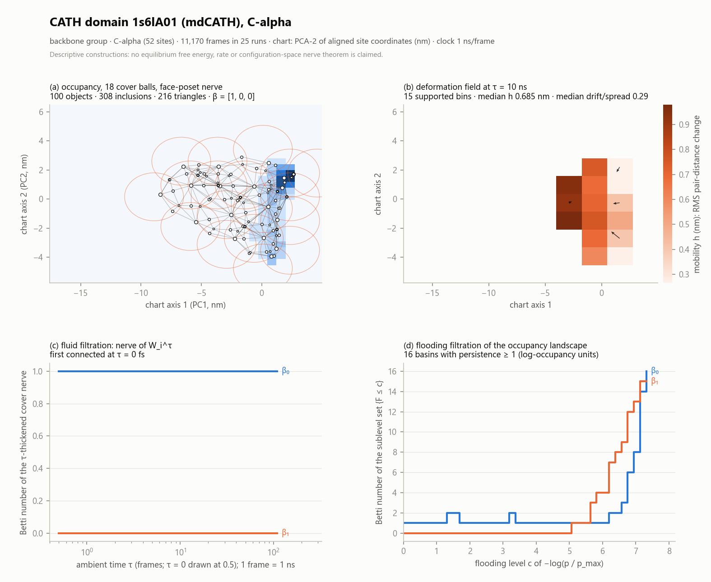
summary · nerve · base.hom · poset.hom · click script
CATH domain 1wpbG01 (mdCATH), C-alpha mdcath-1wpbg01-ca
backbone group · C-alpha (54 sites) · 10,980 frames / 25 runs · nerve 102/320/228 · β [1, 0, 0] · median h 0.5493517755229077 nm · τ_connect 0 frames
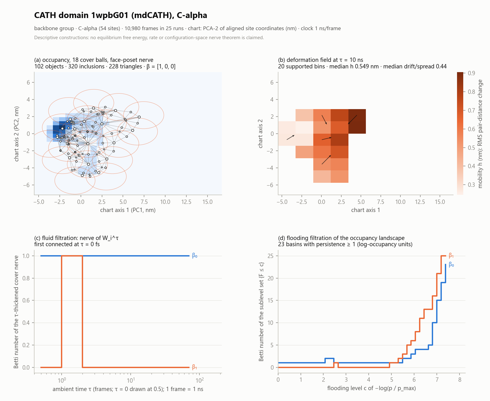
summary · nerve · base.hom · poset.hom · click script
CATH domain 1x4pA00 (mdCATH), C-alpha mdcath-1x4pa00-ca
backbone group · C-alpha (66 sites) · 11,130 frames / 25 runs · nerve 76/196/120 · β [1, 2, 0] · median h 0.799498699994369 nm · τ_connect 0 frames
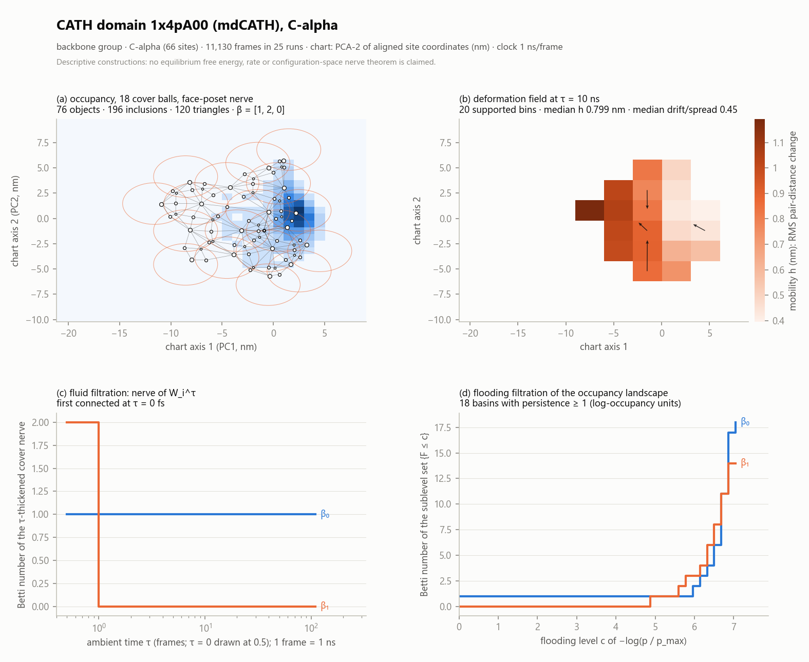
summary · nerve · base.hom · poset.hom · click script
CATH domain 1zbqA02 (mdCATH), C-alpha mdcath-1zbqa02-ca
backbone group · C-alpha (58 sites) · 11,190 frames / 25 runs · nerve 81/218/138 · β [1, 3, 0] · median h 0.799201231598854 nm · τ_connect 0 frames
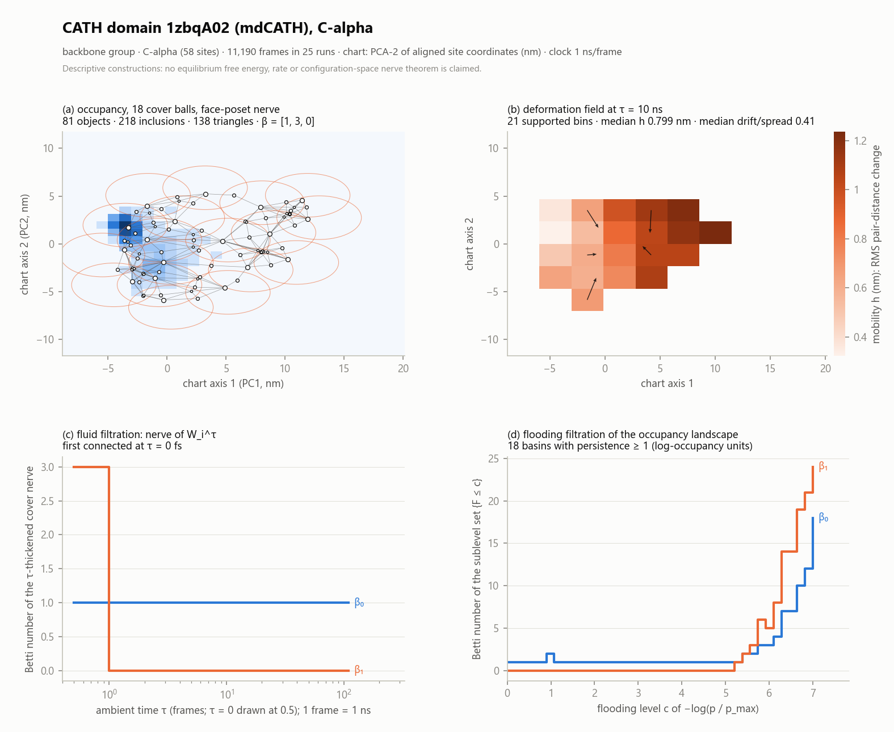
summary · nerve · base.hom · poset.hom · click script
CATH domain 2ckkA02 (mdCATH), C-alpha mdcath-2ckka02-ca
backbone group · C-alpha (57 sites) · 12,500 frames / 25 runs · nerve 118/392/288 · β [1, 1, 0] · median h 0.23934057993832056 nm · τ_connect 0 frames
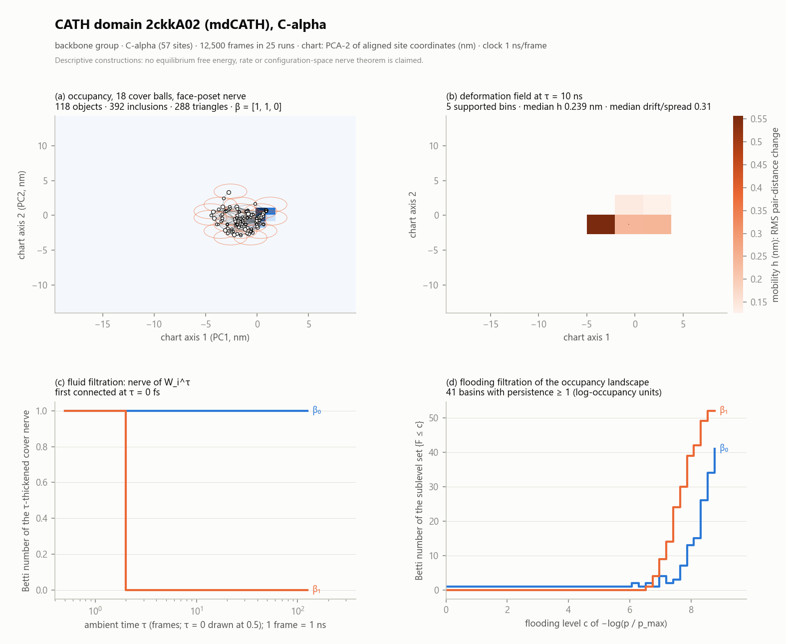
summary · nerve · base.hom · poset.hom · click script
CATH domain 2d46A00 (mdCATH), C-alpha mdcath-2d46a00-ca
backbone group · C-alpha (61 sites) · 11,390 frames / 25 runs · nerve 90/260/174 · β [1, 0, 0] · median h 1.0198009669544483 nm · τ_connect 0 frames
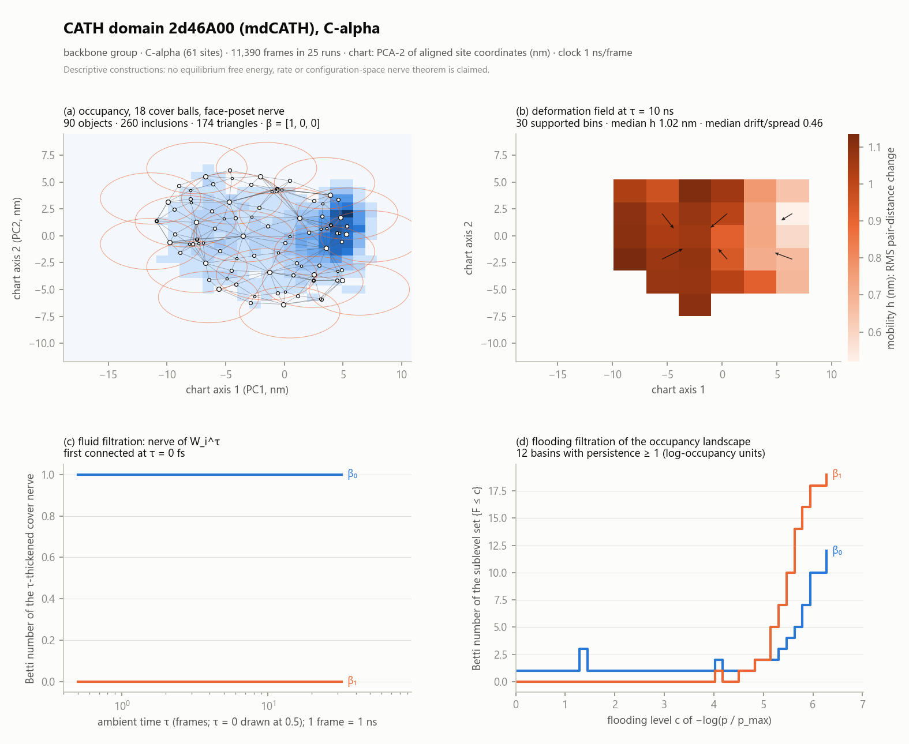
summary · nerve · base.hom · poset.hom · click script
CATH domain 2dmpA01 (mdCATH), C-alpha mdcath-2dmpa01-ca
backbone group · C-alpha (55 sites) · 12,500 frames / 25 runs · nerve 76/196/120 · β [1, 2, 0] · median h 0.8862902234064652 nm · τ_connect 0 frames
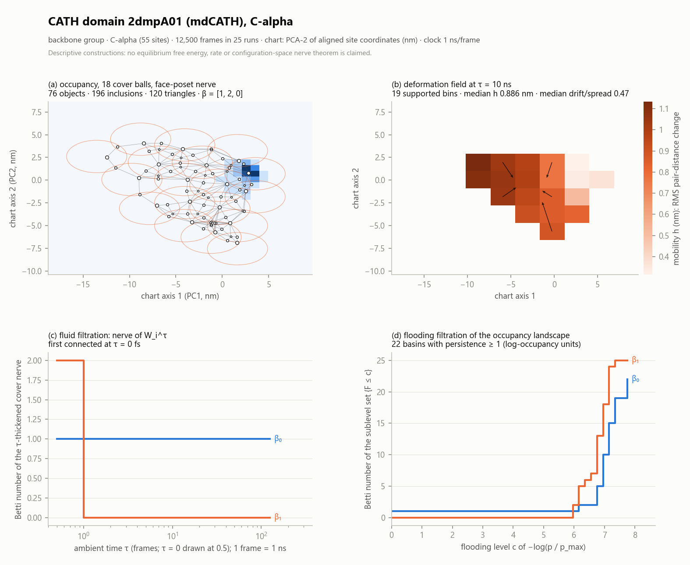
summary · nerve · base.hom · poset.hom · click script
CATH domain 2e3tB03 (mdCATH), C-alpha mdcath-2e3tb03-ca
backbone group · C-alpha (61 sites) · 11,390 frames / 25 runs · nerve 116/384/282 · β [1, 0, 0] · median h 0.4893702520473867 nm · τ_connect 0 frames
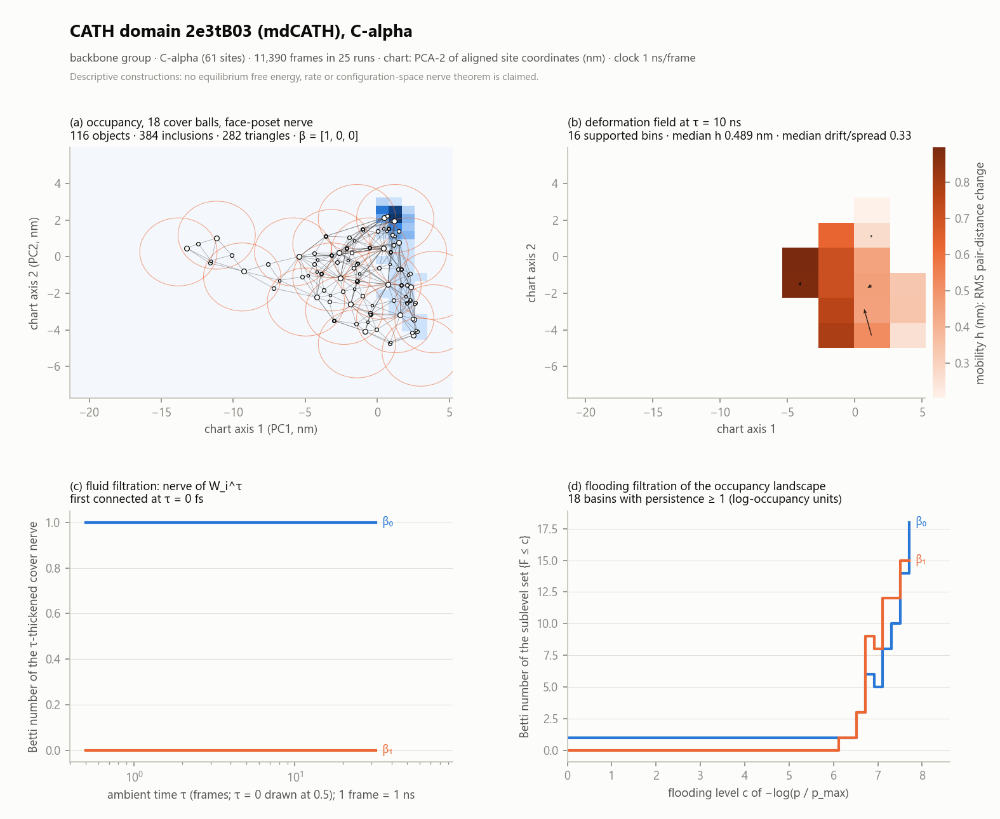
summary · nerve · base.hom · poset.hom · click script
CATH domain 2j8gA03 (mdCATH), C-alpha mdcath-2j8ga03-ca
backbone group · C-alpha (58 sites) · 12,130 frames / 25 runs · nerve 91/266/180 · β [1, 0, 0] · median h 0.7315467985084393 nm · τ_connect 0 frames
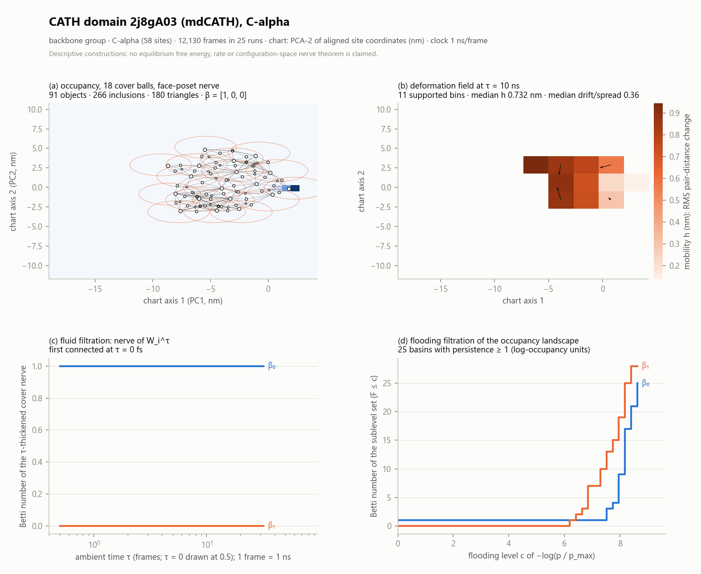
summary · nerve · base.hom · poset.hom · click script
CATH domain 2jrrA01 (mdCATH), C-alpha mdcath-2jrra01-ca
backbone group · C-alpha (53 sites) · 12,500 frames / 25 runs · nerve 93/282/198 · β [1, 0, 0] · median h 0.2920353351165431 nm · τ_connect 0 frames
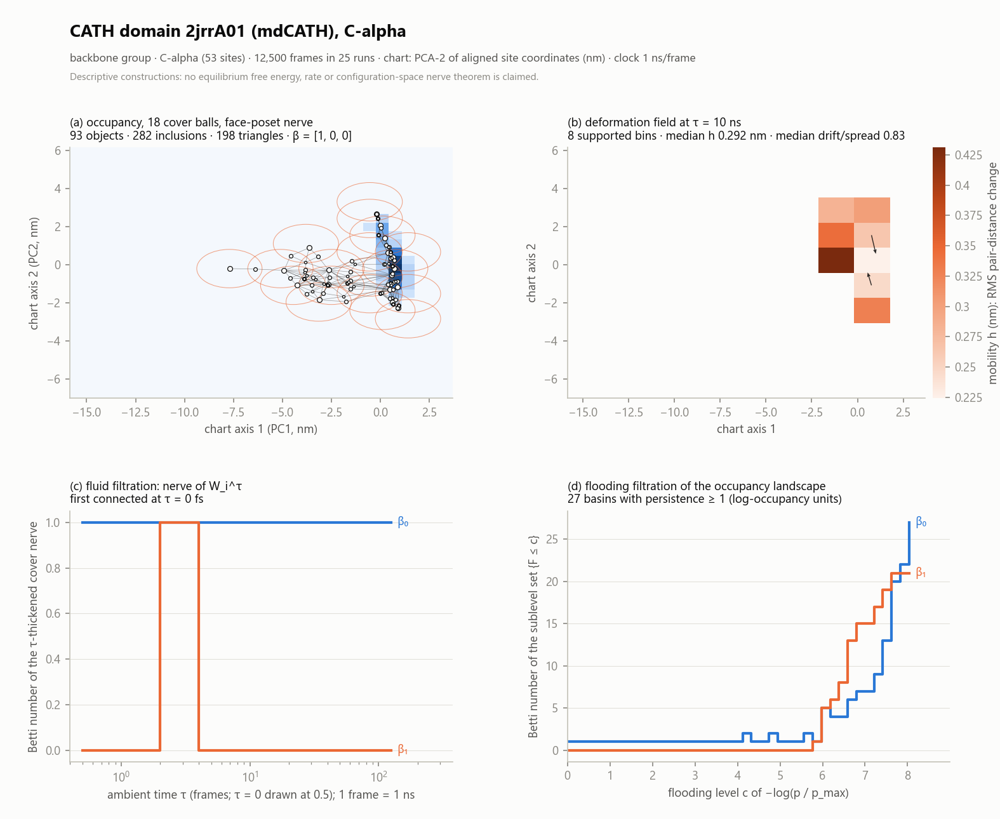
summary · nerve · base.hom · poset.hom · click script
CATH domain 2lrdA00 (mdCATH), C-alpha mdcath-2lrda00-ca
backbone group · C-alpha (61 sites) · 12,500 frames / 25 runs · nerve 74/188/114 · β [1, 2, 0] · median h 0.2096138817186539 nm · τ_connect 0 frames
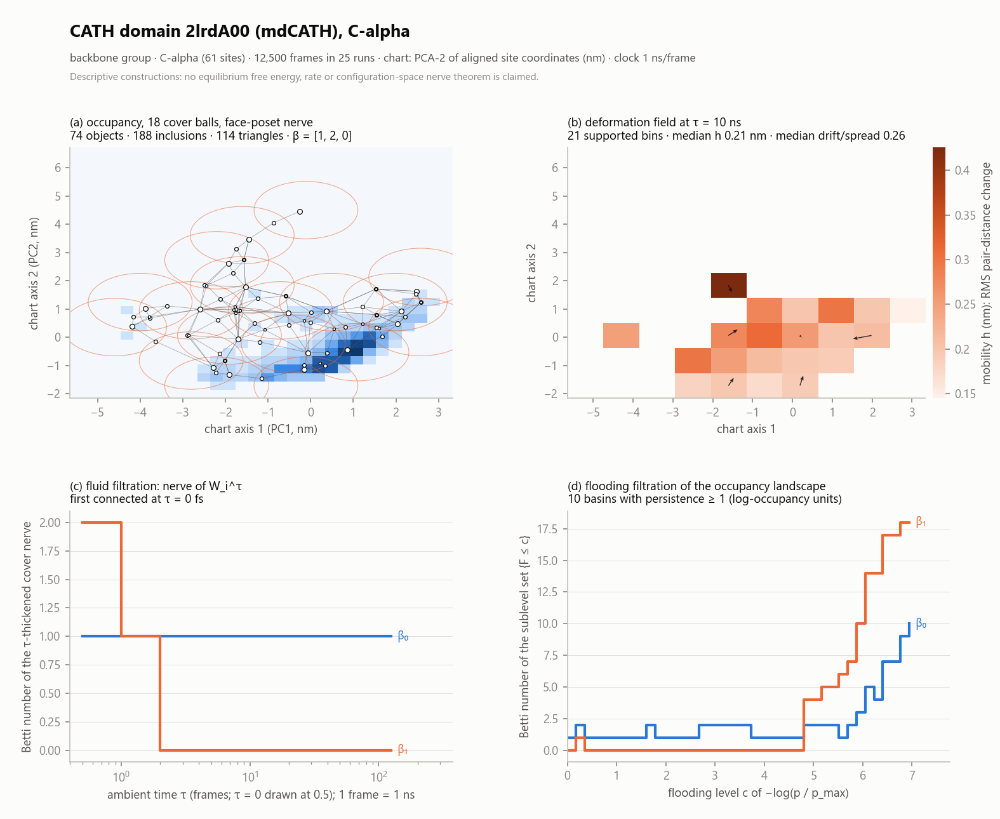
summary · nerve · base.hom · poset.hom · click script
CATH domain 2xepA03 (mdCATH), C-alpha mdcath-2xepa03-ca
backbone group · C-alpha (53 sites) · 11,390 frames / 25 runs · nerve 77/198/120 · β [1, 4, 0] · median h 0.5999313576976155 nm · τ_connect 0 frames
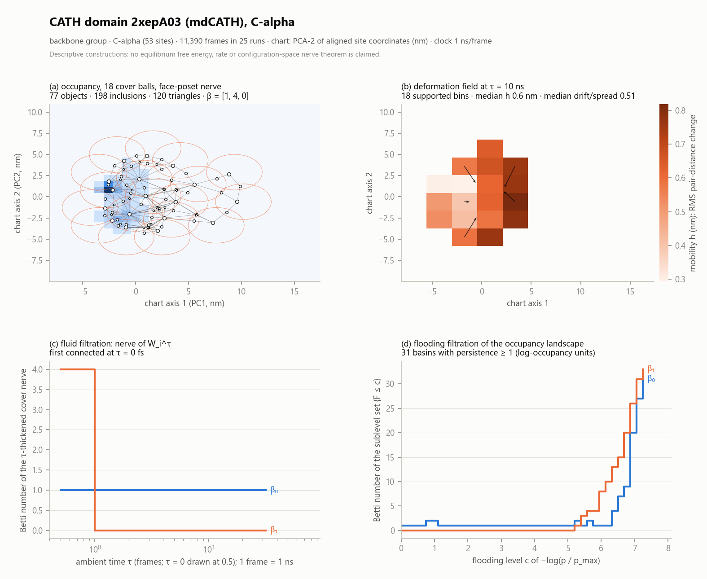
summary · nerve · base.hom · poset.hom · click script
CATH domain 2yilA02 (mdCATH), C-alpha mdcath-2yila02-ca
backbone group · C-alpha (51 sites) · 12,500 frames / 25 runs · nerve 96/300/216 · β [1, 0, 0] · median h 0.24705502665443618 nm · τ_connect 0 frames
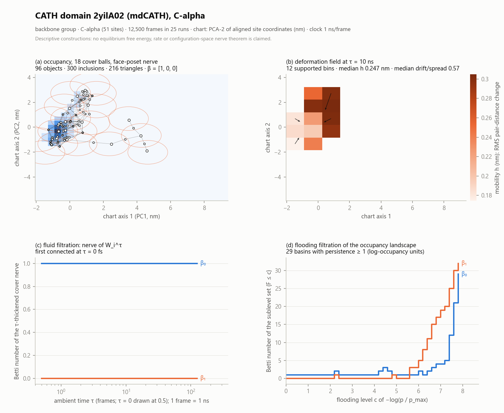
summary · nerve · base.hom · poset.hom · click script
CATH domain 3g5cA02 (mdCATH), C-alpha mdcath-3g5ca02-ca
backbone group · C-alpha (55 sites) · 12,500 frames / 25 runs · nerve 85/238/156 · β [1, 0, 0] · median h 0.47569721934065584 nm · τ_connect 0 frames
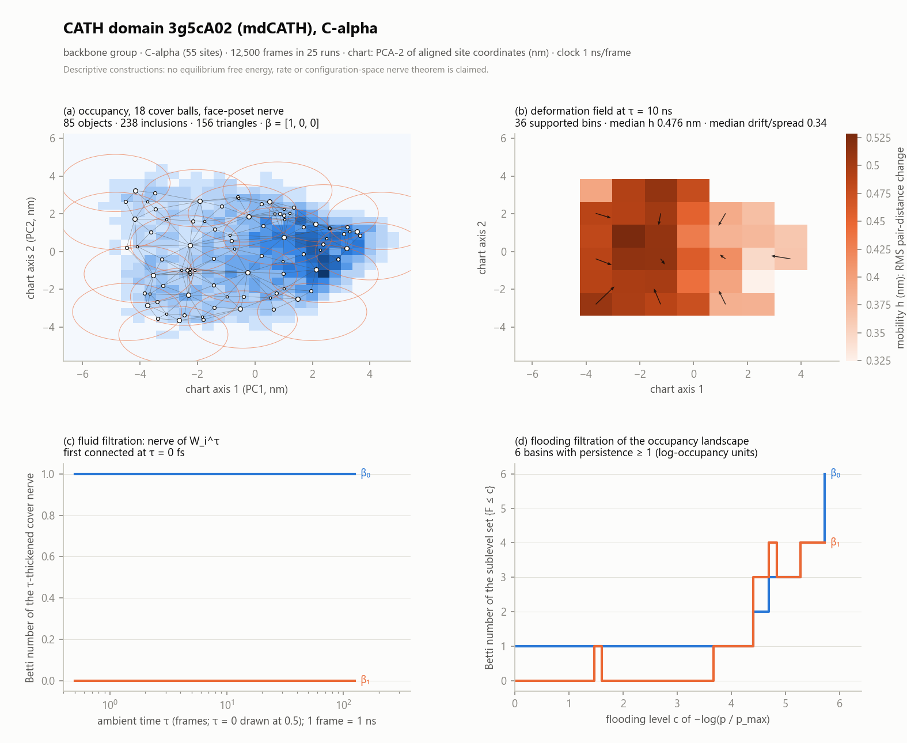
summary · nerve · base.hom · poset.hom · click script
CATH domain 3pmqA02 (mdCATH), C-alpha mdcath-3pmqa02-ca
backbone group · C-alpha (50 sites) · 12,130 frames / 25 runs · nerve 68/160/90 · β [1, 4, 0] · median h 0.8719668662947172 nm · τ_connect 0 frames
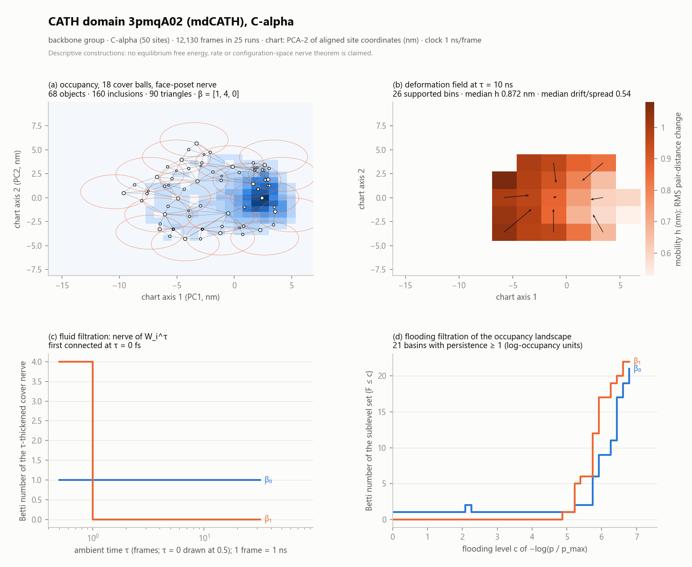
summary · nerve · base.hom · poset.hom · click script
CATH domain 4a0tA01 (mdCATH), C-alpha mdcath-4a0ta01-ca
backbone group · C-alpha (61 sites) · 11,390 frames / 25 runs · nerve 75/190/114 · β [1, 3, 0] · median h 0.6882266128757393 nm · τ_connect 0 frames
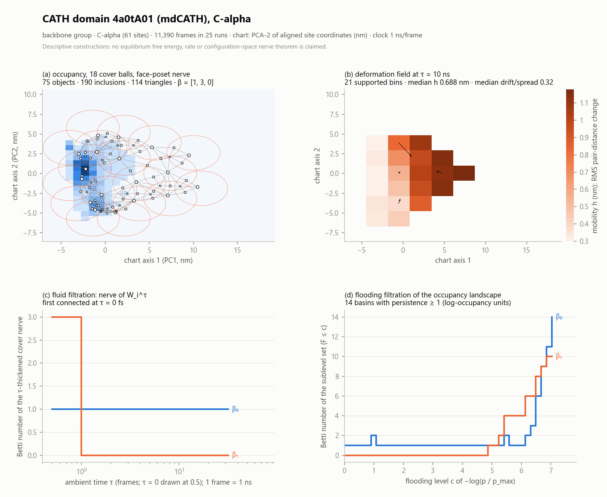
summary · nerve · base.hom · poset.hom · click script
CATH domain 4dczA00 (mdCATH), C-alpha mdcath-4dcza00-ca
backbone group · C-alpha (55 sites) · 11,020 frames / 25 runs · nerve 81/218/138 · β [1, 1, 0] · median h 0.7768822654258986 nm · τ_connect 0 frames
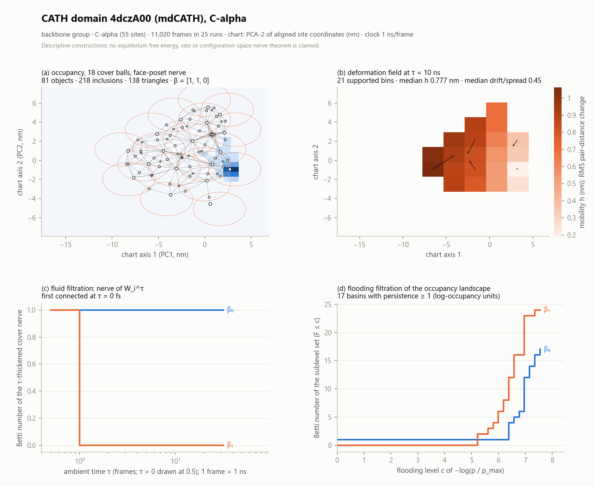
summary · nerve · base.hom · poset.hom · click script
CATH domain 5b1aJ00 (mdCATH), C-alpha mdcath-5b1aj00-ca
backbone group · C-alpha (58 sites) · 11,950 frames / 25 runs · nerve 76/196/120 · β [1, 3, 0] · median h 0.5798823729043117 nm · τ_connect 0 frames
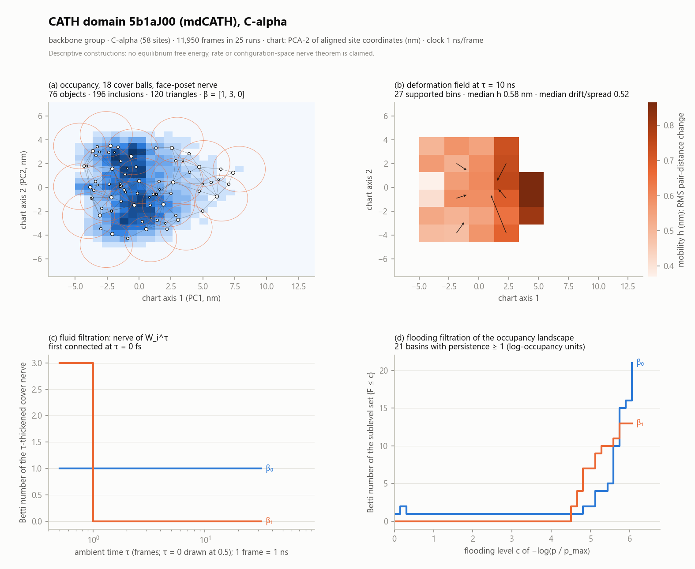
summary · nerve · base.hom · poset.hom · click script
CATH domain 5daeA00 (mdCATH), C-alpha mdcath-5daea00-ca
backbone group · C-alpha (57 sites) · 11,390 frames / 25 runs · nerve 72/172/96 · β [1, 5, 0] · median h 0.28131559314696414 nm · τ_connect 0 frames
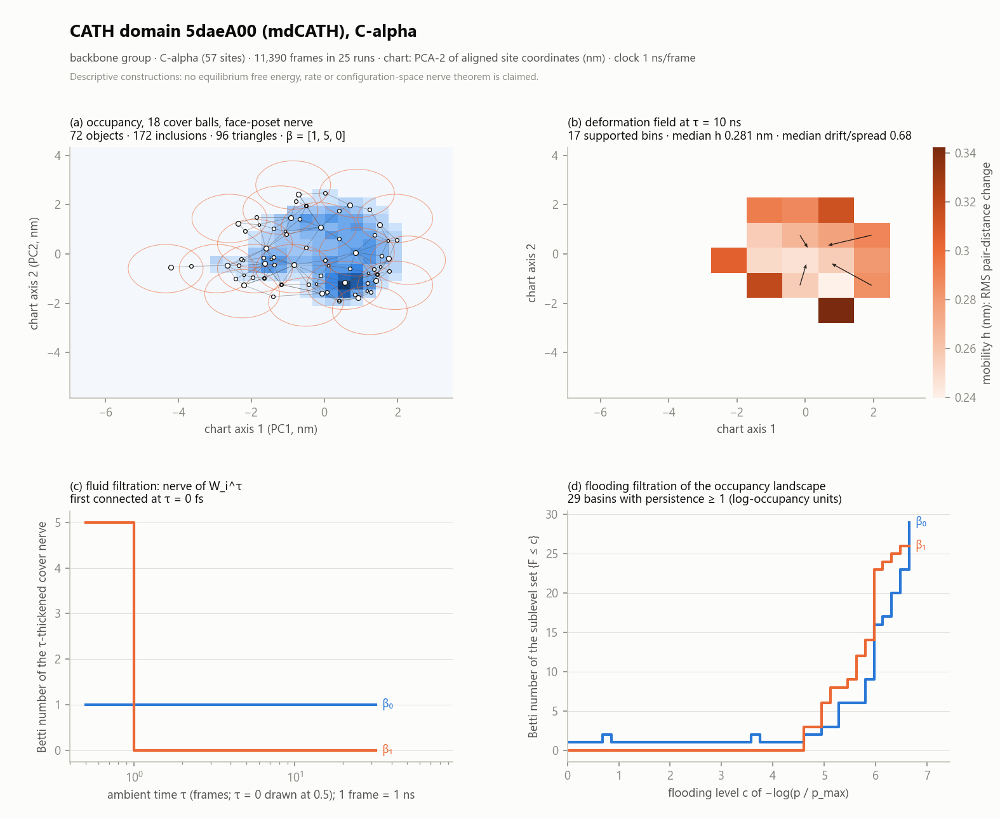
summary · nerve · base.hom · poset.hom · click script
CATH domain 1a92A00 (mdCATH), heavy atoms mdcath-1a92a00-heavy
paired group · heavy atoms (427 sites) · 10,980 frames / 25 runs · nerve 102/316/222 · β [1, 1, 0] · median h 0.6688278281483157 nm · τ_connect 0 frames
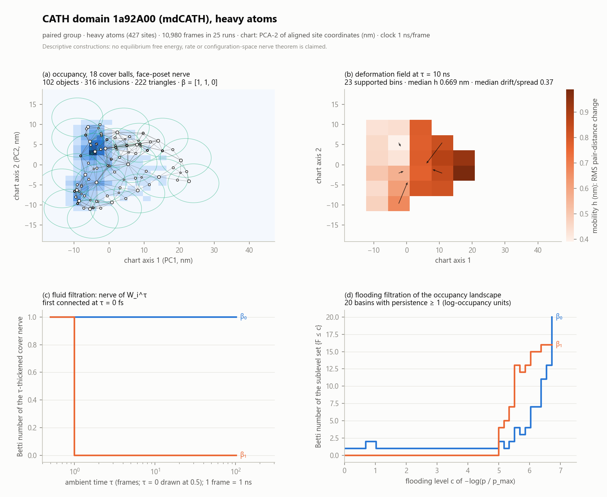
summary · nerve · base.hom · poset.hom · click script
CATH domain 1b33N01 (mdCATH), heavy atoms mdcath-1b33n01-heavy
paired group · heavy atoms (471 sites) · 11,090 frames / 25 runs · nerve 68/156/84 · β [1, 6, 0] · median h 0.4696231269154181 nm · τ_connect 0 frames
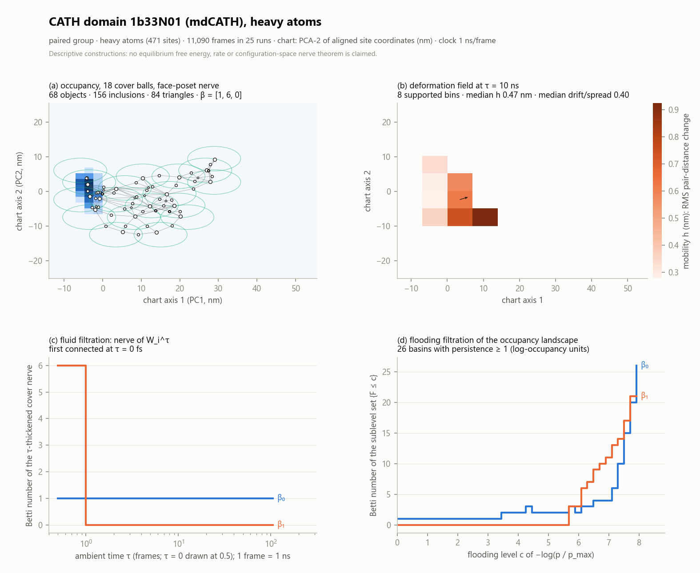
summary · nerve · base.hom · poset.hom · click script
CATH domain 1bdhA01 (mdCATH), heavy atoms mdcath-1bdha01-heavy
paired group · heavy atoms (446 sites) · 11,110 frames / 25 runs · nerve 77/202/126 · β [1, 0, 0] · median h 0.6230048358310258 nm · τ_connect 0 frames
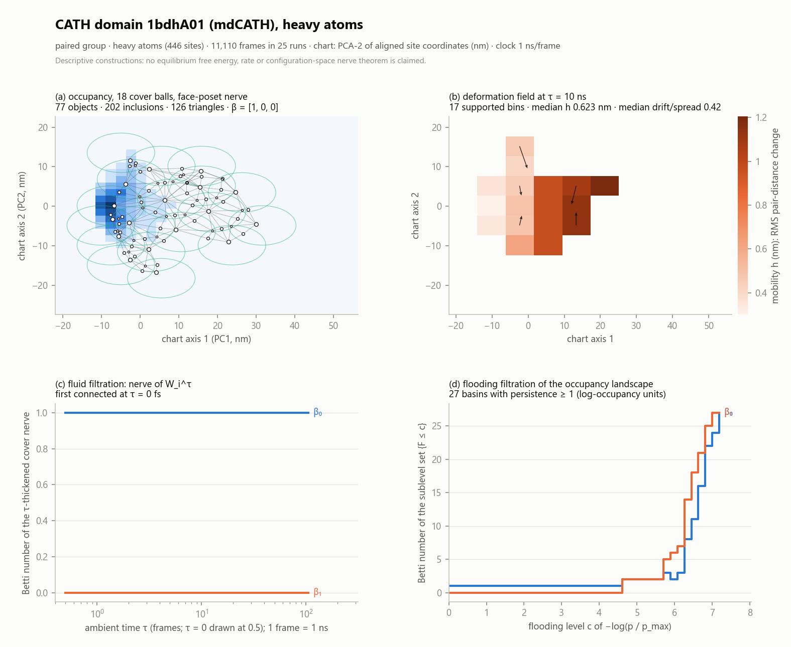
summary · nerve · base.hom · poset.hom · click script
CATH domain 1e5wA04 (mdCATH), heavy atoms mdcath-1e5wa04-heavy
paired group · heavy atoms (483 sites) · 10,910 frames / 25 runs · nerve 96/288/198 · β [1, 0, 0] · median h 0.9134562572628898 nm · τ_connect 0 frames
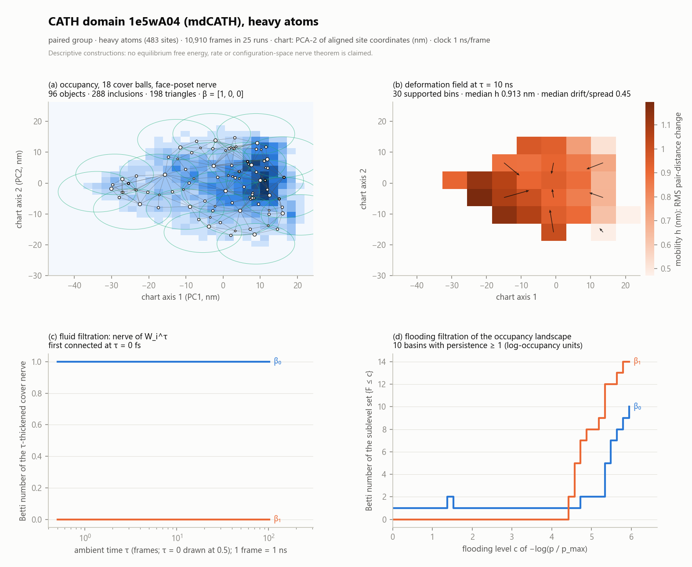
summary · nerve · base.hom · poset.hom · click script
CATH domain 1ffsB00 (mdCATH), heavy atoms mdcath-1ffsb00-heavy
paired group · heavy atoms (518 sites) · 11,141 frames / 25 runs · nerve 128/456/354 · β [2, 0, 0] · median h 0.6984798352145616 nm · τ_connect 1 frames
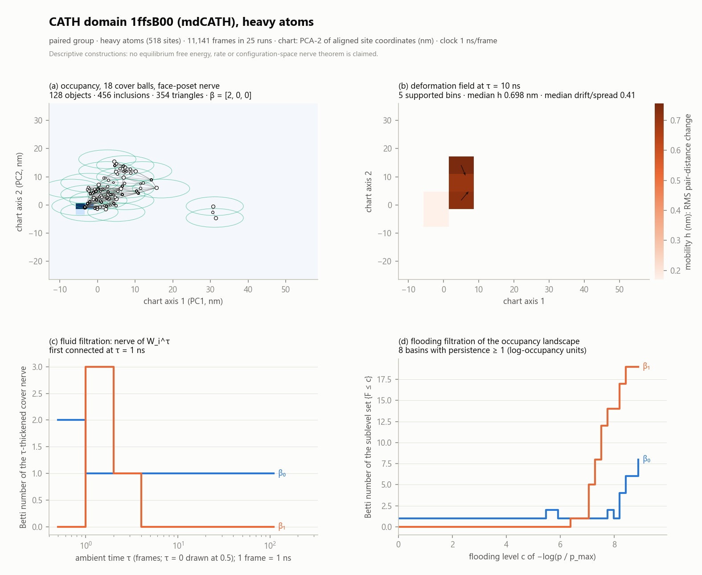
summary · nerve · base.hom · poset.hom · click script
CATH domain 1gjsA00 (mdCATH), heavy atoms mdcath-1gjsa00-heavy
paired group · heavy atoms (504 sites) · 10,970 frames / 25 runs · nerve 99/302/210 · β [1, 1, 0] · median h 0.6476625928102223 nm · τ_connect 0 frames
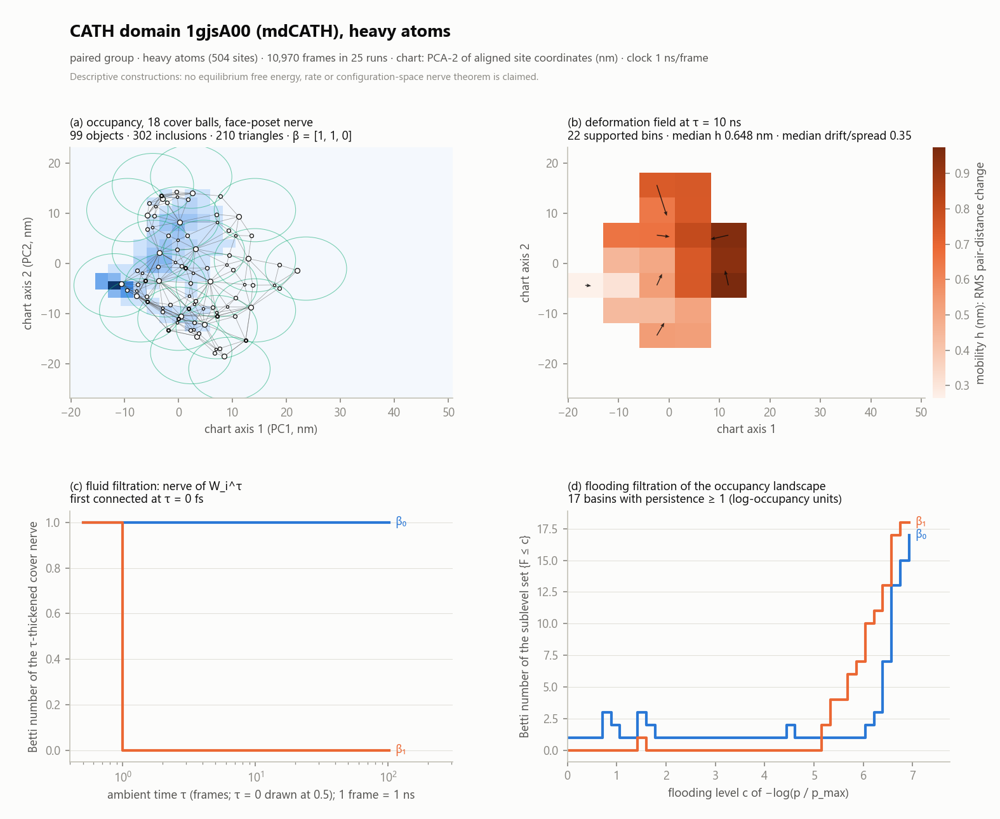
summary · nerve · base.hom · poset.hom · click script
CATH domain 1ha8A00 (mdCATH), heavy atoms mdcath-1ha8a00-heavy
paired group · heavy atoms (352 sites) · 11,150 frames / 25 runs · nerve 78/204/126 · β [1, 3, 0] · median h 0.24164663420866273 nm · τ_connect 0 frames
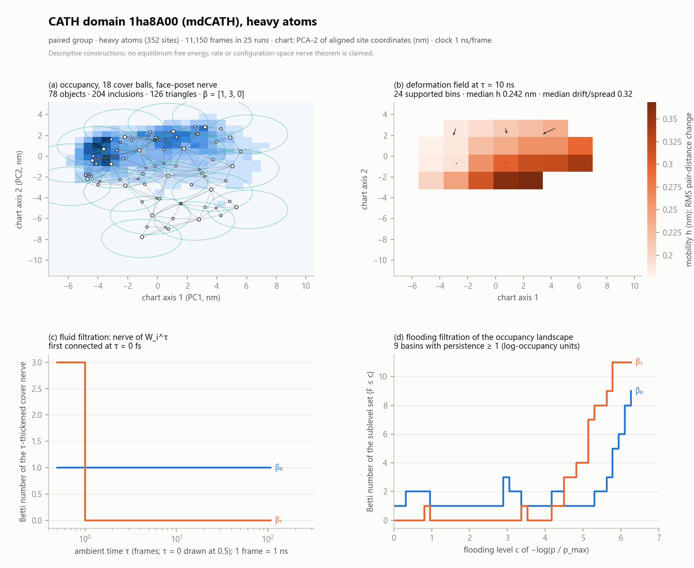
summary · nerve · base.hom · poset.hom · click script
CATH domain 1hcrA00 (mdCATH), heavy atoms mdcath-1hcra00-heavy
paired group · heavy atoms (430 sites) · 11,160 frames / 25 runs · nerve 75/190/114 · β [1, 4, 0] · median h 0.720057173917733 nm · τ_connect 0 frames
summary · nerve · base.hom · poset.hom · click script
CATH domain 1i5xA00 (mdCATH), heavy atoms mdcath-1i5xa00-heavy
paired group · heavy atoms (499 sites) · 11,080 frames / 25 runs · nerve 94/280/192 · β [1, 2, 0] · median h 0.6650226182872152 nm · τ_connect 0 frames
summary · nerve · base.hom · poset.hom · click script
CATH domain 1kliL00 (mdCATH), heavy atoms mdcath-1klil00-heavy
paired group · heavy atoms (472 sites) · 11,100 frames / 25 runs · nerve 77/202/126 · β [1, 3, 0] · median h 0.6334565474476876 nm · τ_connect 0 frames
summary · nerve · base.hom · poset.hom · click script
CATH domain 1l6hA00 (mdCATH), heavy atoms mdcath-1l6ha00-heavy
paired group · heavy atoms (489 sites) · 11,090 frames / 25 runs · nerve 94/280/192 · β [1, 1, 0] · median h 0.401189260023961 nm · τ_connect 0 frames
summary · nerve · base.hom · poset.hom · click script
CATH domain 1r8oB01 (mdCATH), heavy atoms mdcath-1r8ob01-heavy
paired group · heavy atoms (523 sites) · 11,100 frames / 25 runs · nerve 85/234/150 · β [1, 1, 0] · median h 0.8994211579615186 nm · τ_connect 0 frames
summary · nerve · base.hom · poset.hom · click script
CATH domain 1s6lA01 (mdCATH), heavy atoms mdcath-1s6la01-heavy
paired group · heavy atoms (401 sites) · 11,170 frames / 25 runs · nerve 118/396/294 · β [1, 0, 0] · median h 0.7273953139441438 nm · τ_connect 0 frames
summary · nerve · base.hom · poset.hom · click script
CATH domain 1wpbG01 (mdCATH), heavy atoms mdcath-1wpbg01-heavy
paired group · heavy atoms (456 sites) · 10,980 frames / 25 runs · nerve 102/320/228 · β [1, 0, 0] · median h 0.6375820188590209 nm · τ_connect 0 frames
summary · nerve · base.hom · poset.hom · click script
CATH domain 1x4pA00 (mdCATH), heavy atoms mdcath-1x4pa00-heavy
paired group · heavy atoms (517 sites) · 11,130 frames / 25 runs · nerve 76/192/114 · β [1, 5, 0] · median h 0.7610730219786616 nm · τ_connect 0 frames
summary · nerve · base.hom · poset.hom · click script
CATH domain 1zbqA02 (mdCATH), heavy atoms mdcath-1zbqa02-heavy
paired group · heavy atoms (466 sites) · 11,190 frames / 25 runs · nerve 65/146/78 · β [1, 4, 0] · median h 0.8943165072477332 nm · τ_connect 0 frames
summary · nerve · base.hom · poset.hom · click script
CATH domain 2ckkA02 (mdCATH), heavy atoms mdcath-2ckka02-heavy
paired group · heavy atoms (438 sites) · 12,500 frames / 25 runs · nerve 154/560/432 · β [1, 0, 0] · median h 0.2904289955143734 nm · τ_connect 0 frames
summary · nerve · base.hom · poset.hom · click script
CATH domain 2d46A00 (mdCATH), heavy atoms mdcath-2d46a00-heavy
paired group · heavy atoms (486 sites) · 11,390 frames / 25 runs · nerve 92/268/180 · β [1, 0, 0] · median h 1.0272587830238495 nm · τ_connect 0 frames
summary · nerve · base.hom · poset.hom · click script
CATH domain 2dmpA01 (mdCATH), heavy atoms mdcath-2dmpa01-heavy
paired group · heavy atoms (470 sites) · 12,500 frames / 25 runs · nerve 95/282/192 · β [1, 0, 0] · median h 0.920435483473697 nm · τ_connect 0 frames
summary · nerve · base.hom · poset.hom · click script
CATH domain 2e3tB03 (mdCATH), heavy atoms mdcath-2e3tb03-heavy
paired group · heavy atoms (498 sites) · 11,390 frames / 25 runs · nerve 143/526/414 · β [1, 0, 0] · median h 0.5007351453597906 nm · τ_connect 0 frames
summary · nerve · base.hom · poset.hom · click script
CATH domain 2j8gA03 (mdCATH), heavy atoms mdcath-2j8ga03-heavy
paired group · heavy atoms (478 sites) · 12,130 frames / 25 runs · nerve 70/172/102 · β [2, 4, 0] · median h 0.8335926415899252 nm · τ_connect 1 frames
summary · nerve · base.hom · poset.hom · click script
CATH domain 2jrrA01 (mdCATH), heavy atoms mdcath-2jrra01-heavy
paired group · heavy atoms (416 sites) · 12,500 frames / 25 runs · nerve 123/418/312 · β [1, 1, 0] · median h 0.31243390831984236 nm · τ_connect 0 frames
summary · nerve · base.hom · poset.hom · click script
CATH domain 2lrdA00 (mdCATH), heavy atoms mdcath-2lrda00-heavy
paired group · heavy atoms (413 sites) · 12,500 frames / 25 runs · nerve 105/334/240 · β [1, 0, 0] · median h 0.24221489225227424 nm · τ_connect 0 frames
summary · nerve · base.hom · poset.hom · click script
CATH domain 2xepA03 (mdCATH), heavy atoms mdcath-2xepa03-heavy
paired group · heavy atoms (424 sites) · 11,390 frames / 25 runs · nerve 84/232/150 · β [1, 3, 0] · median h 0.6872853535939666 nm · τ_connect 0 frames
summary · nerve · base.hom · poset.hom · click script
CATH domain 2yilA02 (mdCATH), heavy atoms mdcath-2yila02-heavy
paired group · heavy atoms (390 sites) · 12,500 frames / 25 runs · nerve 73/190/120 · β [1, 0, 0] · median h 0.3359518846728771 nm · τ_connect 0 frames
summary · nerve · base.hom · poset.hom · click script
CATH domain 3g5cA02 (mdCATH), heavy atoms mdcath-3g5ca02-heavy
paired group · heavy atoms (409 sites) · 12,500 frames / 25 runs · nerve 78/204/126 · β [1, 2, 0] · median h 0.5140737092515589 nm · τ_connect 0 frames
summary · nerve · base.hom · poset.hom · click script
CATH domain 3pmqA02 (mdCATH), heavy atoms mdcath-3pmqa02-heavy
paired group · heavy atoms (385 sites) · 12,130 frames / 25 runs · nerve 72/176/102 · β [1, 4, 0] · median h 0.9637756108347229 nm · τ_connect 0 frames
summary · nerve · base.hom · poset.hom · click script
CATH domain 4a0tA01 (mdCATH), heavy atoms mdcath-4a0ta01-heavy
paired group · heavy atoms (490 sites) · 11,390 frames / 25 runs · nerve 91/266/180 · β [1, 1, 0] · median h 0.7120787684008567 nm · τ_connect 0 frames
summary · nerve · base.hom · poset.hom · click script
CATH domain 4dczA00 (mdCATH), heavy atoms mdcath-4dcza00-heavy
paired group · heavy atoms (466 sites) · 11,020 frames / 25 runs · nerve 84/236/156 · β [1, 0, 0] · median h 0.8651756189487598 nm · τ_connect 0 frames
summary · nerve · base.hom · poset.hom · click script
CATH domain 5b1aJ00 (mdCATH), heavy atoms mdcath-5b1aj00-heavy
paired group · heavy atoms (465 sites) · 11,950 frames / 25 runs · nerve 86/244/162 · β [1, 1, 0] · median h 0.6405587970278689 nm · τ_connect 0 frames
summary · nerve · base.hom · poset.hom · click script
CATH domain 5daeA00 (mdCATH), heavy atoms mdcath-5daea00-heavy
paired group · heavy atoms (438 sites) · 11,390 frames / 25 runs · nerve 80/216/138 · β [1, 2, 0] · median h 0.32911673387778656 nm · τ_connect 0 frames
summary · nerve · base.hom · poset.hom · click script